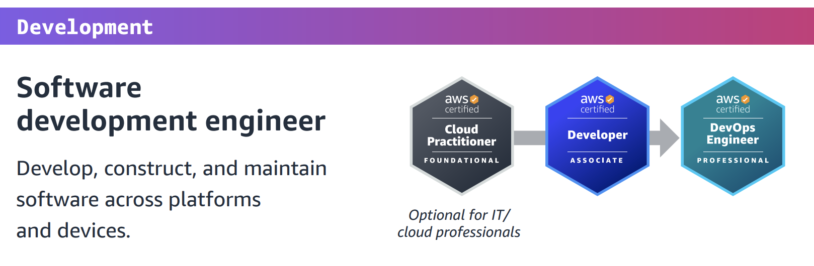
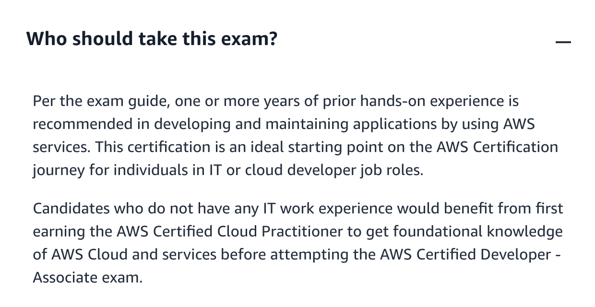
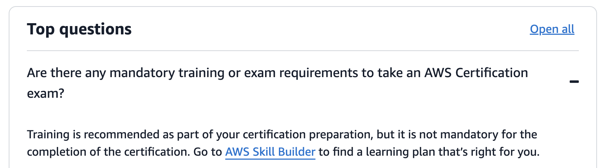
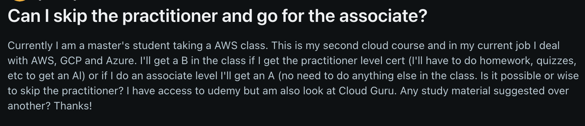
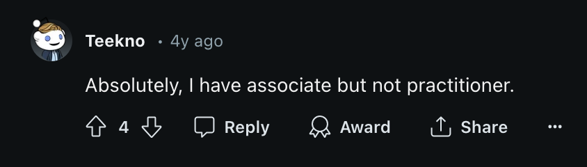
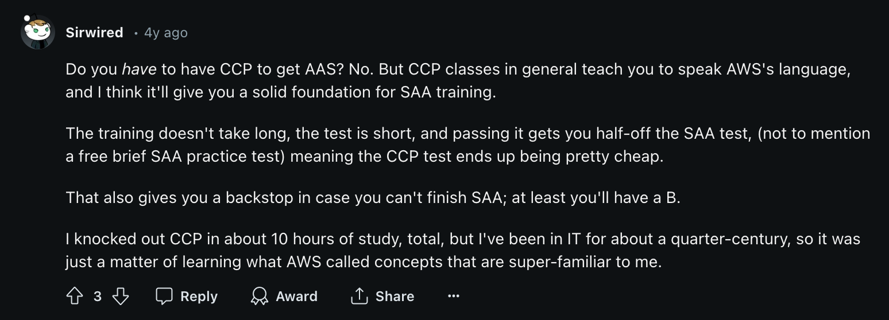
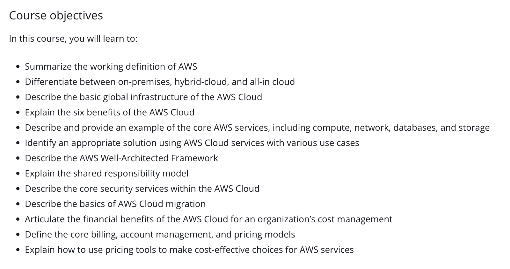

In an attempt to both solidify and extend my AWS knowledge I have decided to try at least one AWS certification. I've done professional qualifications before and always wanted to blog about the experience but inevitably didn't becuase I did the exam first and then was going to blog about it after. However, after putting in all the effort into the exam prep and taking it I then lost steam and put off blogging about it until it was a distant memory and harder to blog about. In an attempt to learn from this mistake I'm going to blog/journal as I prepare for and take the exam, not after.
So this is a sort introductory post to get me in the routine of journalling about it in a series of blog posts.
There is an argument that if I wanted to learn about AWS and it's services I don't need to put myself through the stress of doing an exam. If I want to learn about something in particular then there are plenty of good (probably even free) resources out there that I can use. And this is a very good and valid point.
So why do an exam?
I've found the other professional qualifications I've done benefical because altough I can learn about a subject sometimes that subject is a lot wider in scope than I know or than I would cover just by cherry picking the things I want to learn. Ultimately, you don't know what you don't know. So doing an exam like this pushes me to learn about things that I may have never considered before but end up being really useful.
Fine, but I could just then find the list of topics covered by an exam and learn about them and not actually do the exam right? Again, why put myself under that pressure?
I find that having the goal of sitting an exam helps focus me and actually means that I will learn the subject matter and remember it. Rather than just reading something once and forgetting it forever.
I'm going to study for and take the Developer Associate exam. This seems to make the most sense as I already have some cloud (specifically AWS) experience and the Associate level exams say "Prior cloud and/or strong on-premises IT experience recommended.".
There is a Cloud Practioner exam that you can take that's billed as a foundational exam and even appears in the Developer (and all the other) certifications path as a starting point (here for reference):
But, as this screen grab shows, it is optional and the summary for it says "No prior experience needed" which suggests that it's for those that have no cloud experience and so you don't actually have to do it.
Being me I wanted to check out the foundational exam further just to make sure that I wasn't missing something and double check whether I would have to in fact take this one exam before the actual one that I wanted to.
More information can be found from AWS about who should take the Developer Associate exam here:
And here clarifies if there is anything mandatory for taking the Developer Associate exam:
Plus having a quick google for if you can skip the Practioner exam and go straight for an Associate exam throws up this Reddit post:
I won't screen grab the whole thing, but these summarise the answers nicely:
 In summary the sides of the argument seem to be:
The whole "it gets you used to taking an AWS exam" did actually start to convince me that maybe this would just be good prep for taking the actual exam I wanted to take. But then I looked at the content for the Practioner exam (found here)
Reading this content list cemented my decision: I'm not going to take the Practioner exam. It's optional and the contents of the exam itself are very rudimentary. I've not got unlimited time to prep for and take the Developer exam so spending time on this one seem like an unnecessry side quest.